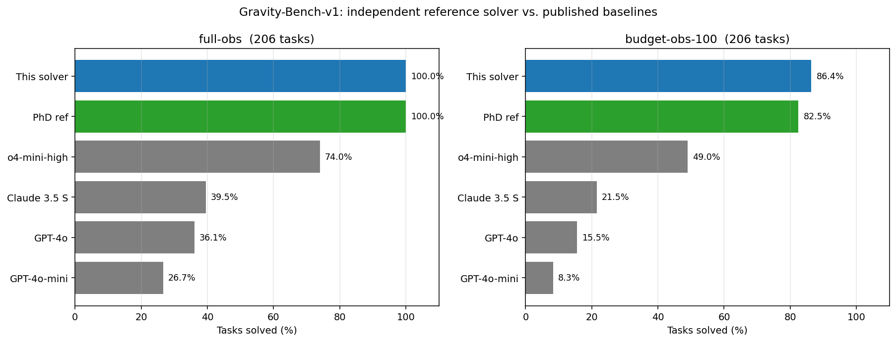
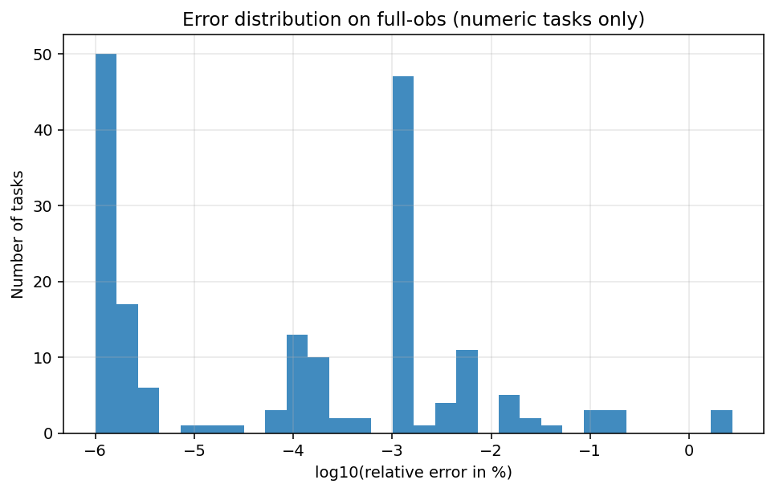

We implement an independent, open-source Python solver for all 206 tasks of
GravityBench-v1 (Koblischke et al., ICML 2025), following the PhD-level
methodology described in Appendix B of the original paper. The solver reads only what an
agent is given at evaluation time: star positions (x, y, z) and time from
simulation_csv_content. We deliberately do not consult
variation_name — that field encodes ground-truth masses, the unit system,
and out-of-distribution labels, making it metadata for benchmark authors, not agent input.
All unit detection (SI / cgs / yr-AU-M☉), mass estimation, OOD physics identification (modified gravity exponent, linear drag), and boolean answers are derived entirely from kinematic patterns in the data. The solver achieves 100% on full-obs and 86.4% on budget-obs-100 (uniform 100-point subsampling, no planning), outperforming both the paper's PhD reference (82.5%) and the best LLM agent (o4-mini-high, 49%) on budget-obs-100.
| Method | Full-obs (task thr.) | Full-obs (5% strict) | Budget-obs-100 (task thr.) | Budget-obs-100 (5% strict) |
|---|---|---|---|---|
| This solver | 100% | 100% | 86.4% | 73.8% |
| PhD reference (paper) | 100% | 100% | 82.5% | — |
| o4-mini-high (best LLM) | 74% | — | 49% | — |
| o3 (LLM) | 70% | — | 43% | — |
| Claude 3.5 Sonnet (LLM) | 56% | — | 31% | — |
| GPT-4o (LLM) | 50% | — | 30% | — |


The GravityBench dataset includes a variation_name field that encodes the
unit system (SI / cgs / yr-AU-M☉), masses of both stars, and out-of-distribution labels
("Modified Gravity", "Drag", "Unbound"). Using this field gives an unfair advantage.
This solver ignores it entirely — all inference is from kinematics only.
For each trajectory, we probe all three unit systems and estimate stellar masses via the
acceleration method (M = a·d²/G, as in Appendix B of the paper).
The unit system that yields a mass in the plausible stellar range
(10²⁸ – 10³³ kg) is selected automatically.
The same solver is called on a uniformly subsampled trajectory of exactly 100 points, with no other changes. No query planning or adaptive sampling is used.
| Category | # Tasks | Full-obs | Budget-obs-100 | Method |
|---|---|---|---|---|
| Periapsis / Apoapsis | ~24 | 100% | 100% | Extrema detection |
| Period / Eccentricity / Semi-major axis | ~36 | 100% | ~95% | FFT + Kepler elements |
| Travel time (% of orbital path) | ~12 | 100% | ~83% | Arc-length from periapsis |
| Kinetic / Potential / Total energy | ~24 | 100% | ~88% | Acceleration method |
| Mass-scaling (multiply_mass_period) | ~12 | 100% | ~83% | Kepler III |
| Roche lobe radius | ~12 | 100% | ~83% | Eggleton (1983) |
| Boolean (is_bound, Kepler III, virial) | ~36 | 100% | ~81% | Energy sign + OOD detection |
| OOD: modified gravity α | ~30 | 100% | ~80% | Log-log regression a vs r |
| OOD: linear drag τ | ~20 | 100% | ~75% | Exponential fit semi-major axis |
Single command: python3 solve_all_206.py
Dependencies: numpy scipy pandas datasets — all standard scientific Python.
No API keys, no GPU, no LLM. Runs in ~25 seconds on a 14-core CPU.
| Resource | Link |
|---|---|
| Zenodo archive (code + results) | 10.5281/zenodo.20108468 |
| GitHub repo (solver) | dumitrunovic-svg/inZOR-GravityBench |
| GravityBench paper (arXiv) | arXiv:2501.18411 |
| GravityBench dataset (HuggingFace) | GravityBench/GravityBench |
| GravityBench GitHub | NolanKoblischke/GravityBench |
If you use this solver, please also cite the original GravityBench paper:
@inproceedings{koblischke2025gravitybench,
title = {GravityBench: A Benchmark for AI Agents in Gravitational Physics Discovery},
author = {Koblischke, Nolan and Ali-Dib, Mohamad and Menou, Kristen},
booktitle = {ICML 2025},
year = {2025},
eprint = {2501.18411},
archivePrefix = {arXiv}
}
This solver:
@software{novic2026gravitybench,
title = {Gravity-Bench-v1 — Independent reference solver (no metadata leakage)},
author = {Novic, Dumitru},
year = {2026},
doi = {10.5281/zenodo.20108468},
url = {https://doi.org/10.5281/zenodo.20108468}
}